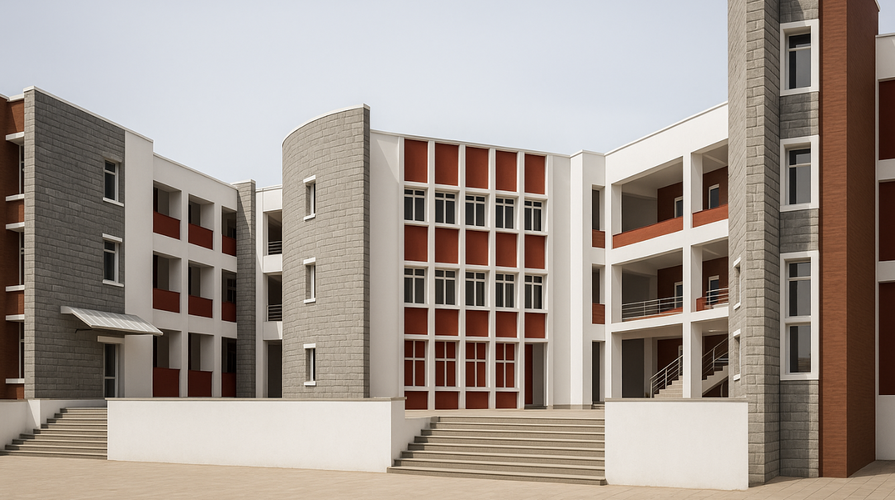
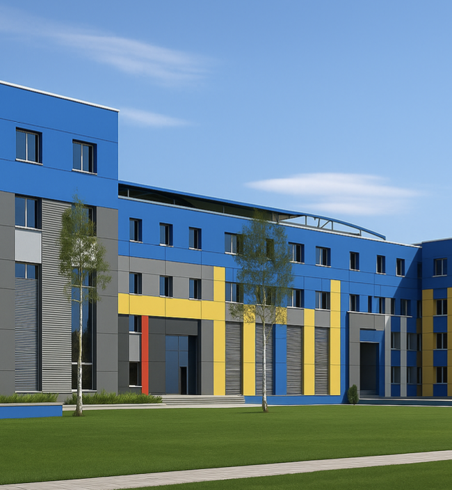
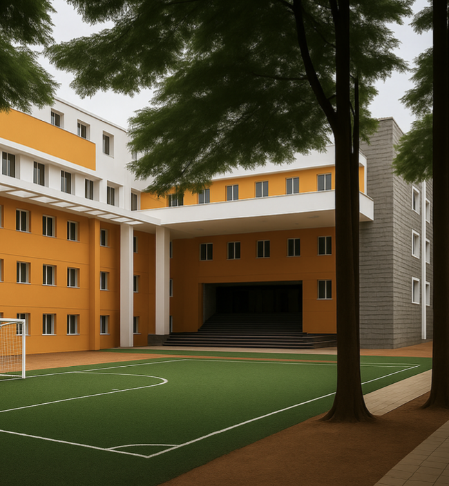

SJR Public Schools

Overview
This project brings together three SJR schools we designed across Bangalore. Each sits on a different site in a different part of the city, with its own scale and character, but they share a common purpose: to provide high-quality school buildings for large numbers of students on compact urban sites.
The Kengeri campus, in the south-west of the city, is the smallest of the three. It occupies just 0.6 acres, with a built area of 50,000 square feet, and accommodates up to 800 students. The Sarjapur campus, in the south-east, is the largest, covering two acres with 1,20,000 square feet of built space and a capacity of 2,000 students. The school in HRBR Layout, in the north-east, occupies 1.5 acres, with a built-up area of 90,000 square feet, and serves 1,600 students. Between them, the three schools provide places for more than 4,000 children.
Those figures tell an important part of the story. On sites this compact, every square foot counts. Land in Bangalore is scarce and expensive, and a school serving hundreds or thousands of children has to fit classrooms, laboratories, libraries, assembly spaces and play areas into a footprint far smaller than a suburban campus. The challenge is to achieve that density without making the school feel cramped, dark or institutional.
Our response was to build upwards and plan carefully. Classroom blocks rise over several floors to free as much ground as possible for open space and play. Every classroom is planned to receive good daylight and cross-ventilation, so that even on a tight urban site, students learn in bright, airy rooms. Circulation is kept clear and efficient, with staircases and corridors sized for the movement of large numbers of students at each change of period, while open areas at ground level give children room to gather, play and let off energy.
Durability was another priority. Schools like these are used intensively by large numbers of children every day, for decades. The buildings needed to stand up to heavy use without constant maintenance, and without feeling institutional. We chose robust materials and straightforward construction, and designed details that age well, so that the schools stay good places to learn long after they first open.
Designing three schools under one name let us develop a consistent approach while responding to the conditions of each site. The schools share a common architectural language and a common set of principles — daylight, ventilation, efficient planning and durable construction — but each is shaped by its own site, neighbourhood and number of students. The Kengeri school makes the most of a very small plot; the Sarjapur campus has room for more generous open space; the HRBR Layout school balances the two.
Each school was also built to the norms of its board: the Kengeri school to those of the Council for the Indian School Certificate Examinations, and the HRBR Layout and Sarjapur schools to those of the Central Board of Secondary Education. Meeting those requirements, from minimum classroom sizes to dedicated laboratories and a library, on sites this compact is a large part of what made the planning so demanding.
Schools like these play a vital role in a growing city. They serve large and diverse communities of families, and they shape the daily experience of thousands of children. For us, designing them matters as much as designing any landmark. The SJR schools show that good architecture does not depend on a generous site or a lavish budget. With careful planning and clear priorities, even a dense urban school can give its students daylight, fresh air, room to play and a building they can be proud of.
Architects — Kumar & Swamy Architects, Bangalore



Planning a school or campus?
Tell us about your institution — a new campus, an extension, a master plan or a renovation. Every project starts with a conversation.